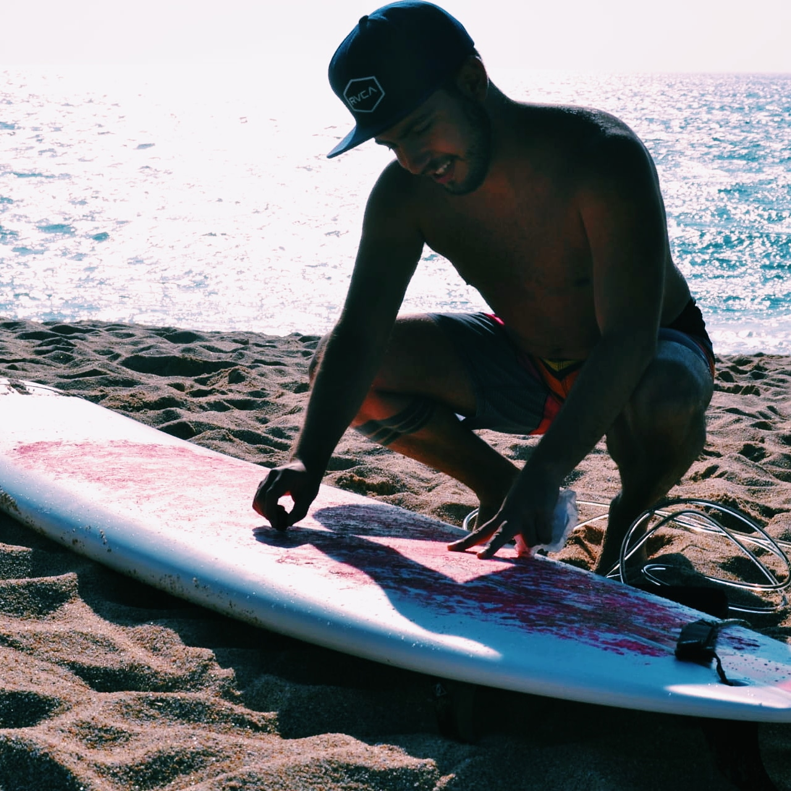
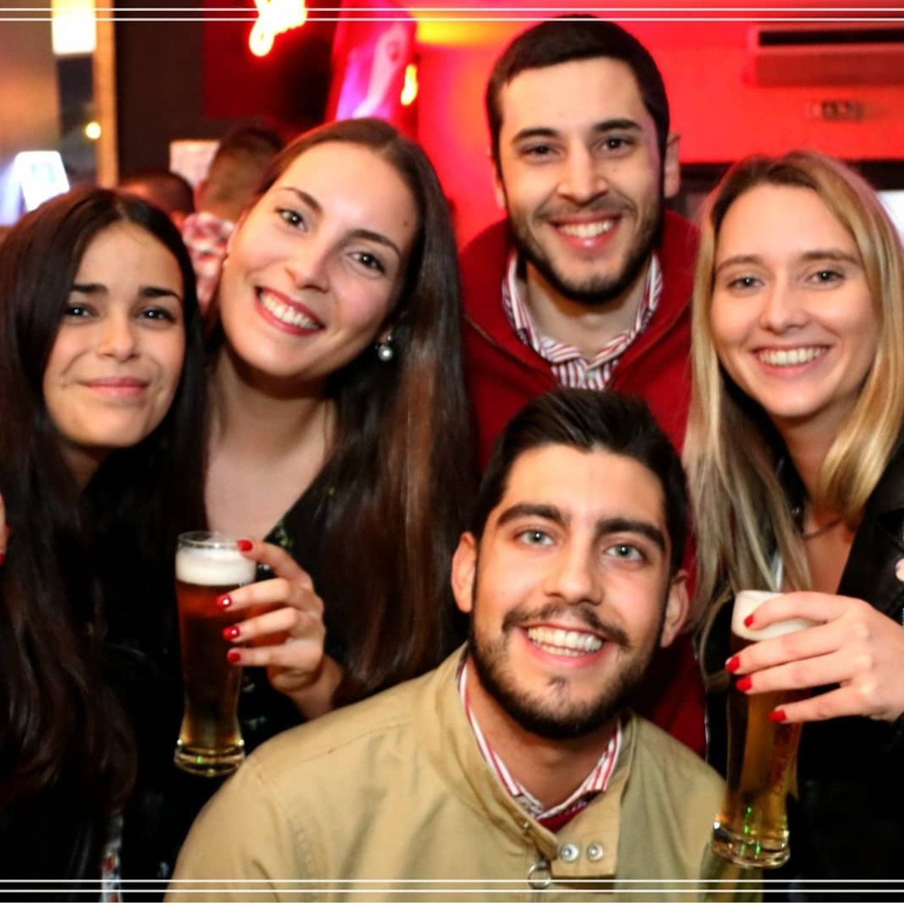

Como passo grande parte do meu dia sentado em frente a um computador, os hobbies que mais gosto são aqueles que envolvem mais atividade física. Sendo assim, o que mais gosto de fazer nos meus tempos livres é praticar desporto. Atualmente, pratico kickboxing e surf. São desportos que me ajudam a desligar dos problemas, a aliviar o stress e a manter um estilo de vida saudável.
Gosto muito de Data Science.
O que é Data Science: "A Minimalism Approach to Understand What Data Science Is" (link fonte: towardsdatascience.com)
Para além disso, gosto bastante de sair à noite e estar com a minha namorada.
 